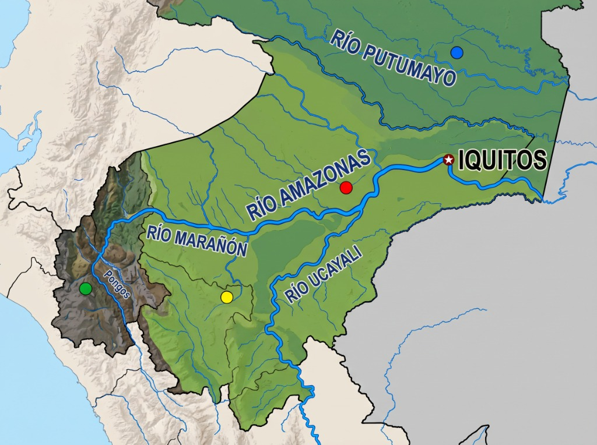

Sesión 03: Análisis Materialista Histórico de los Pueblos Originarios Amazónicos
Comprendemos cómo el espacio biofísico, las fuerzas productivas y los ciclos extractivos moldearon la tecnología, organización comunal y resistencia de las naciones amazónicas.
Mapa Territorial Interactivo e Inferencia
Paso 1: Toca cada uno de los 4 puntos de colores del mapa y explora los 9 pueblos originarios.
Paso 2: Al final de la ficha de cada pueblo, responde su Pregunta de Inferencia Materialista y completa abajo la Síntesis Territorial.

Habiendo recorrido las 4 zonas: ¿Por qué la forma en que un pueblo consigue su alimento y trabaja su tierra determina cómo se organiza, cómo vive y cómo se defiende? Plantea una conclusión clara.
⏳ Respuesta pendiente Guardado automático en borrador
Entrega de Evaluación y Evidencia: Infografía
Tu identidad se vincula automáticamente desde tu sesión iniciada en la Web Matriz. Selecciona el pueblo trabajado en tu infografía, redacta tu justificación y adjunta tu fotografía.